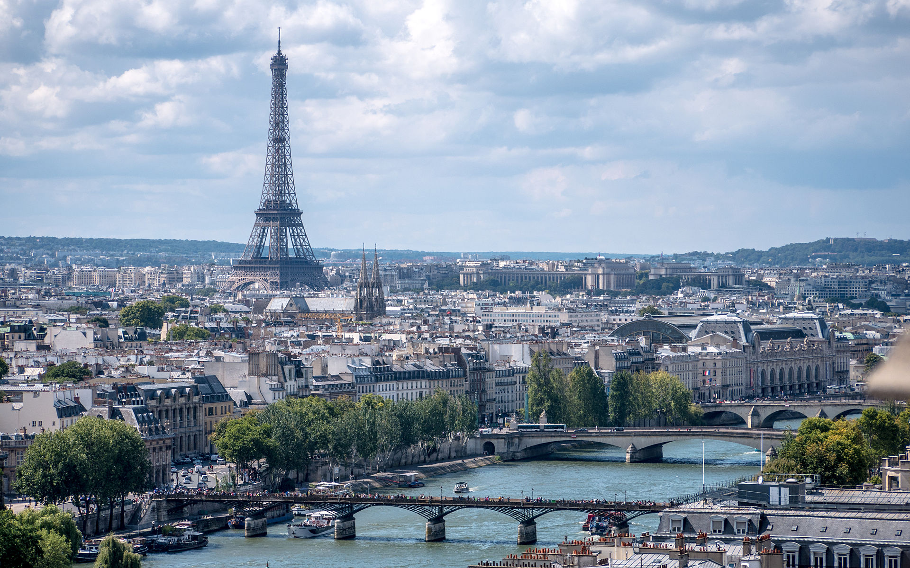

Paryż – miejsce, które trzeba zobaczyć. Miasto zakochanych, stolica światowej mody, jeden z najważniejszych ośrodków turystycznych i kulturalnych. Przybywający tu filozofowie i artyści od wieków kształtowali niepowtarzalną atmosferę tego miasta. Paryż to również miejsce pełne zabytków-symboli, które znają niemal wszyscy. Katedra Notre-Dame de Paris, Luwr, wieża Eiffla, wzgórze Montmartre z bazyliką Sacre Coeur i światowej sławy muzea. A dla najmłodszych parki rozrywki z Disneylandem na czele. Podczas wakacji w Paryżu każdy znajdzie atrakcje dla siebie.
